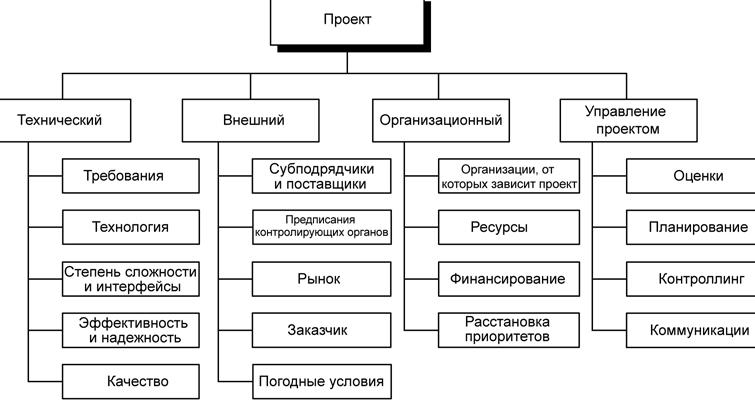
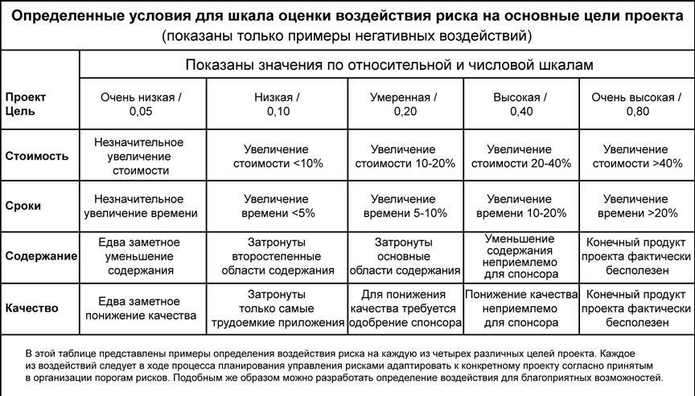

Планирование управления рисками (п.11.1, рис.14.1)
Тщательное и подробное планирование повышает вероятность успешного достижения результатов пяти других процессов управления рисками.
Планирование управления рисками - это процесс определения подходов и планирования операций по управлению рисками проекта. Планирование процессов управления рисками позволяет обеспечить соразмерность уровня, типа и прозрачности управления рисками как самому риску, так и значению проекта для организации, а также выделить достаточное количество времени и ресурсов для выполнения операций по управлению рисками и определить общее основание для оценки рисков. Процесс планирования управления рисками должен быть завершен на ранней стадии планирования проекта, поскольку он крайне важен для успешного выполнения других процессов, описанных в данной главе.
11.1.1 Планирование управления рисками: входы
11.1.1.1 Факторы внешней среды предприятия. Отношение к риску и толерантность к риску организаций и лиц, участвующих в проекте, оказывает влияние на план управления проектом (п. 4.3). Отношение к риску и толерантность к риску могут быть зафиксированы в изложении основных принципов или проявляться в конкретных действиях (п. 4.1.1.3).
11.1.1.2 Активы организационного процесса. Организации могут иметь заранее разработанные подходы к управлению рисками, например категории рисков, общие определение понятий и терминов, стандартные шаблоны, схемы распределения ролей и ответственности, а также определенные уровни полномочий для принятия решений.
11.1.1.3 Описание содержания проекта см. п. 5.2.3.1.
11.1.1.4 План управления проектом см. п. 4.3.
11.1.2 Планирование управления рисками: инструменты и методы
11.1.2.1 Совещания по планированию и анализ. Команда проекта проводит совещания для разработки плана управления рисками. В совещаниях могут принимать участие менеджер проекта, отдельные члены команды проекта и участники проекта, представители организации, отвечающие за операции по планированию рисков и реагированию на них, и, при необходимости, другие лица.
На таких совещаниях составляются базовые планы по проведению операций по управлению рисками. Также разрабатываются элементы стоимости рисков и плановые операции, которые включаются соответственно в бюджет проекта и расписание. Утверждается распределение ответственности в случае наступления риска. Имеющиеся в организации общие шаблоны, касающиеся категорий рисков и определения терминов (например, уровни рисков, вероятность возникновения рисков по типам, последствия рисков для целей проекта по типам целей, а также матрица вероятности и последствий), приспосабливаются для каждого конкретного проекта с учетом его специфики.Выходы этих операций сводятся в план управления рисками.
11.1.3 Планирование управления рисками: выходы
11.1.3.1 План управления рисками содержит описания структуры управления рисками проекта и порядок его выполнения в рамках проекта. Этот план включается в состав плана управления проектом (п. 4.3). План управления рисками включает в себя следующие элементы:
- Методология. Определение подходов, инструментов и источников данных, которые могут использоваться для управления рисками в данном проекте.
- Распределение ролей и ответственности. Список позиций выполнения, поддержки и управления рисками для каждого вида операций, включенных в план управления рисками, назначение сотрудников на эти позиции и разъяснение их ответственности.
- Разработка бюджета. Выделение ресурсов и оценка стоимости мероприятий, необходимых для управления рисками. Эти данные включаются в базовый план по стоимости проекта (п. 7.2.3.1).
- Сроки. Определение сроков и частоты выполнения процесса управления рисками на протяжении всего жизненного цикла проекта, а также определение операций по управлению рисками, которые необходимо включить в расписание проекта (п. 6.5.3.1).
- Категории рисков. Структура, на основании которой производится систематическая и всесторонняя идентификация рисков с нужной степенью детализации; такая структура способствует повышению эффективности и качества идентификации рисков. Организация может использовать разработанную ранее классификацию типичных рисков.
Такую структуру можно разработать с помощью составления иерархической структуры рисков (ИСРс) (рис. 14.3), но ту же задачу можно решить, просто составив перечень различных аспектов проекта. В процессе идентификации рисков категории рисков могут пересматриваться. Хорошей практикой считается пересмотр категорий рисков во время планирования управления рисками, перед тем как эти категории будут использованы в процессе идентификации рисков. Прежде чем принять к использованию в текущем проекте классификацию рисков, основанную на прежних проектах, ее, вероятно, потребуется уточнить, изменить или адаптировать к специфике нового проекта.
- Определение вероятности возникновения рисков и их последствий. Добросовестный и достоверный качественный анализ рисков предполагает, что определены различные уровни вероятностей возникновения рисков и их воздействия. Общие определения уровней вероятности и уровней воздействия адаптируются отдельно для каждого проекта в ходе процесса планирования управления рисками и используются затем в процессе качественного анализа рисков (п. 11.3).

Рисунок 14.3 - Пример иерархической структуры рисков (ИСРс)
Можно использовать относительную шкалу, на которой вероятность обозначена описательно, со значениями от "крайне маловероятно" до "почти наверное". Можно также использовать общую шкалу, на которой вероятности соответствует цифровое значение, например: 0,1 - 0,3 - 0,5 - 0,7 - 0,9. Другой способ градуирования вероятности предполагает создание описаний состояния проекта, соответствующего рассматриваемому риску (например, степень завершения проектирования продукта).
Шкала оценки воздействия отражает значимость воздействия (негативного для угроз или позитивного для благоприятных возможностей) риска в случае его возникновения. Шкала оценки воздействия может различаться в зависимости от потенциально затронутой риском цели, типа и размера проекта, принятыми в организации стратегиями и ее финансовым состоянием, а также от чувствительности организации к конкретному виду воздействий. Относительная шкала последствий содержит только описательные обозначения, например "очень низкий", "низкий", "средний", "высокий" и "очень высокий", расположенные в порядке возрастания максимальной силы воздействия риска согласно определению данной организации. То же самое можно сделать иначе, путем присвоения данным последствиям цифровых значений. Эти цифровые значения могут быть линейными (например, 0,1 - 0,3 - 0,5 - 0,7 - 0,9) или нелинейными (например, 0,05 - 0,1 - 0,2 - 0,4 - 0,8). Нелинейная шкала может отражать намерение организации избежать угроз, имеющих серьезное воздействие, или использовать наиболее благоприятные возможности, даже если вероятность из возникновения относительно низка. При использовании нелинейной шкалы важно понимать, что цифры означают и каково их отношение друг к другу, как эти цифры получены и как они могут повлиять на различные цели проекта.
На рис. 14.4 приведен пример определений негативных последствий, которые можно использовать при оценке воздействия рисков на четыре цели проекта. На рисунке представлены как относительный, так и цифровой (в данном случае нелинейный) способы обозначения. Цель этого рисунка не в том, чтобы показать, что относительные и цифровые обозначения равнозначны, а в том, чтобы проиллюстрировать две возможности в одной таблице, а не в двух.

Рисунок 14.4 - Определение шкалы оценки воздействия для четырех целей проекта
- Матрица вероятности и последствий. Расстановка рисков по приоритету соответствует потенциальной степени значимости их последствий для достижения целей проекта. Типичным способом расположения рисков по приоритету является использование справочной таблицы или матрицы вероятности и последствий (см. рис. 14.5 и п. 11.3.2.2). Обычно организация сама устанавливает сочетания вероятности и воздействия, на основании которых степень риска определяется как "высокая", "средняя" или "низкая", что в свою очередь определяет значимость для планирования реагирования на данный риск (п. 11.5). Эти сочетания в процессе планирования управления рисками могут пересматриваться и адаптироваться к конкретному проекту.
- Уточненная толерантность к рискам участников проекта. В ходе процесса планирования управления рисками толерантность к риску участников проекта может корректироваться применительно к конкретному проекту.
- Формы отчетности. Дает описание содержания и формата реестра рисков (п. 11.2 -11.5), а также любых других требуемых отчетов по рискам. Содержит определение, каким образом производится документирование, анализ и обмен информацией о результатах процесса управления рисками.
- Отслеживание. Документирует порядок регистрации всех аспектов операций по рискам в интересах данного проекта, а также для будущих проектов и включения в документы по накопленным знаниям.Документирует, в каких случаях и как будет проводиться аудит процессов управления рисками.